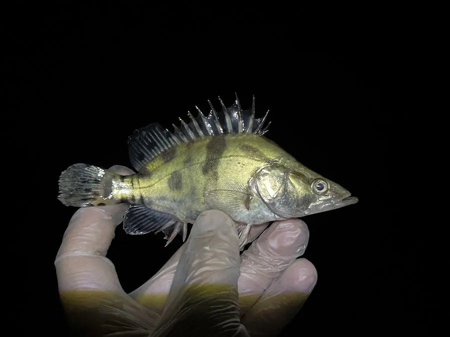

鱼类 · 动物界
鳜鱼 Siniperca chuatsi

中国名贵淡水鱼，体侧扁、身上有黑色斑块，性情凶猛，终生以活鱼活虾为食，肉质细嫩少刺，是江南名菜“松鼠鳜鱼”的原料。
- 分类
- 门脊索动物门纲硬骨鱼纲目鲈形目科鳜科属鳜属
- 栖息环境
- 水草茂盛的江河、湖泊和水库，喜静水或缓流的底层环境
- 地理分布
- 中国长江、珠江、黄河、黑龙江等水系，以长江中下游最为常见
- 保护级别
- 暂无评估；中国未列入国家重点保护野生动物名录
物种志
鳜鱼体侧扁、背部隆起，头大、口大，下颌稍向前突出，口中布满细密的牙齿；体色黄绿或灰褐，体侧分布着不规则的黑色斑块和斑点，背鳍和臀鳍长着锋利的硬棘。成鱼体长一般 20–40 cm，体重 0.5–2 kg，最大个体可超过 5 kg。
鳜鱼是凶猛的肉食性鱼类，终生以活鱼、活虾为食，常隐蔽在水草、石缝或障碍物旁，待猎物靠近时突然出击。它多栖息于水草茂盛的静水或缓流水域，白天藏身，晨昏和夜间活动较多。繁殖期在 5–7 月，亲鱼在江河湖泊的浅水草区产卵，卵为漂流性。鳜鱼原产中国长江、珠江、黄河、黑龙江等水系，以长江中下游最为常见，因肉质细嫩少刺而成为名贵食用鱼，“桃花流水鳜鱼肥”说的正是春季的鳜鱼。目前它没有IUCN 的正式评估，中国未将其列入国家重点保护野生动物名录。
形态与习性
- 食性凶猛肉食性，终生以活鱼活虾为食
- 体长一般 20–40 cm，最大可超过 60 cm
- 体重常见 0.5–2 kg，最大可超过 5 kg
- 繁殖5–7 月在浅水草区产卵，卵为漂流性
- 习性隐蔽在水草、石缝中突袭猎物，有领域性
- 棘刺背鳍和臀鳍的硬棘锋利，捕捉时需小心被刺伤
趣味知识
- 鳜鱼只吃活食，人工养殖时要用活鱼苗或经过驯化的饲料慢慢诱食。
- “桃花流水鳜鱼肥”出自唐代张志和的《渔歌子》，写的就是春季的鳜鱼。
- 鳜鱼的侧线系统发达，能感知水流变化，锁定躲藏的小鱼。